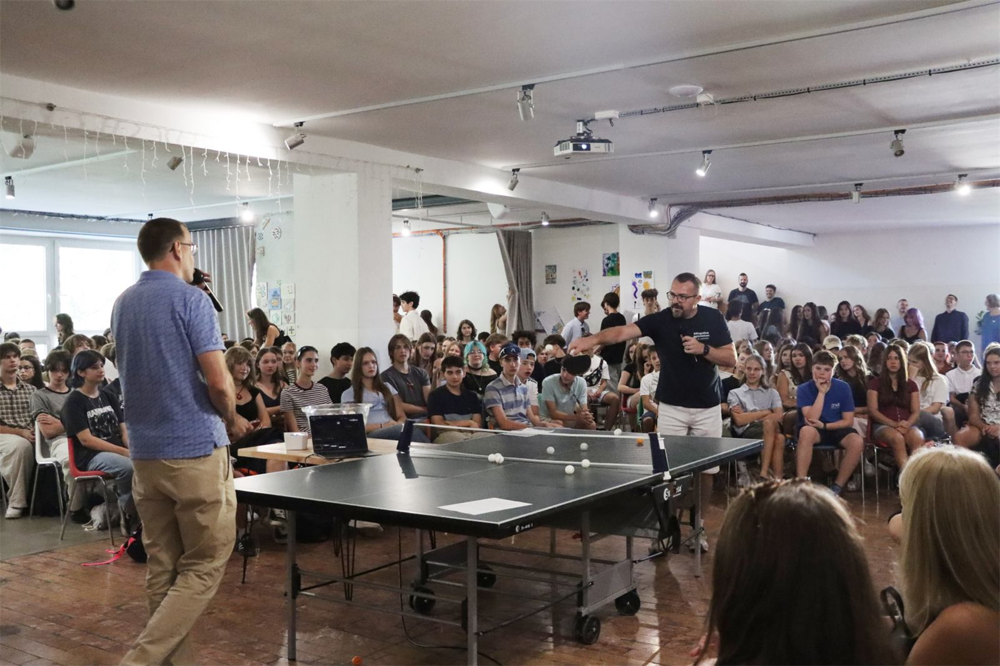
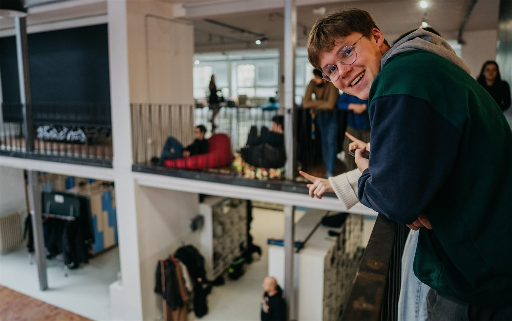
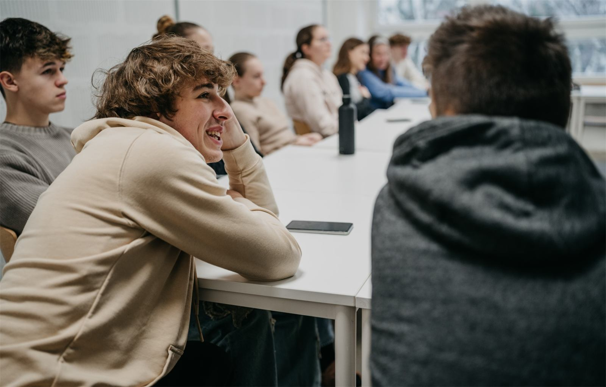
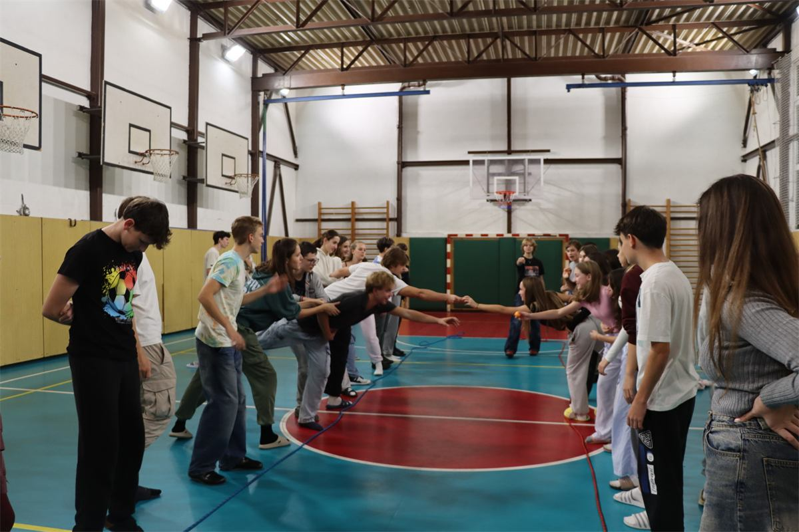
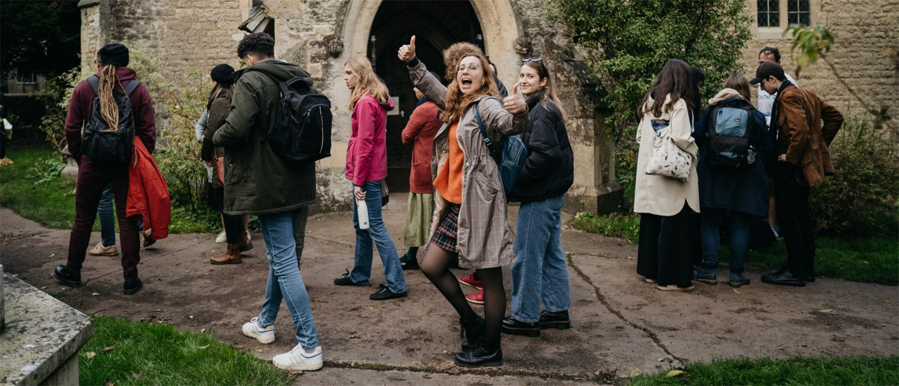
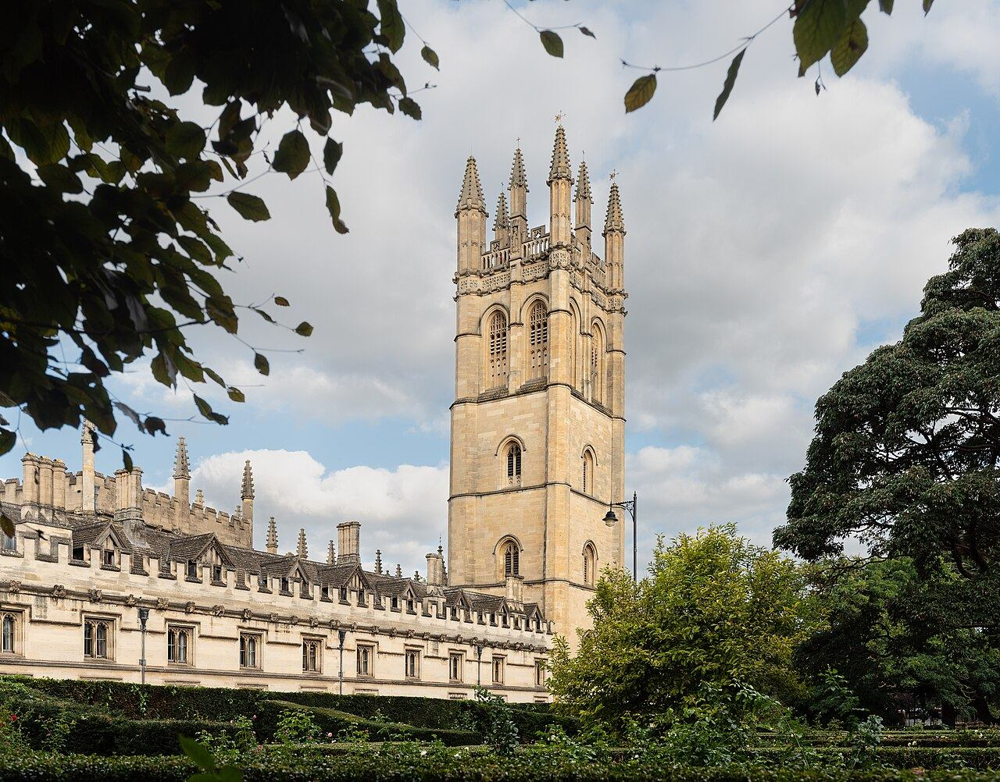
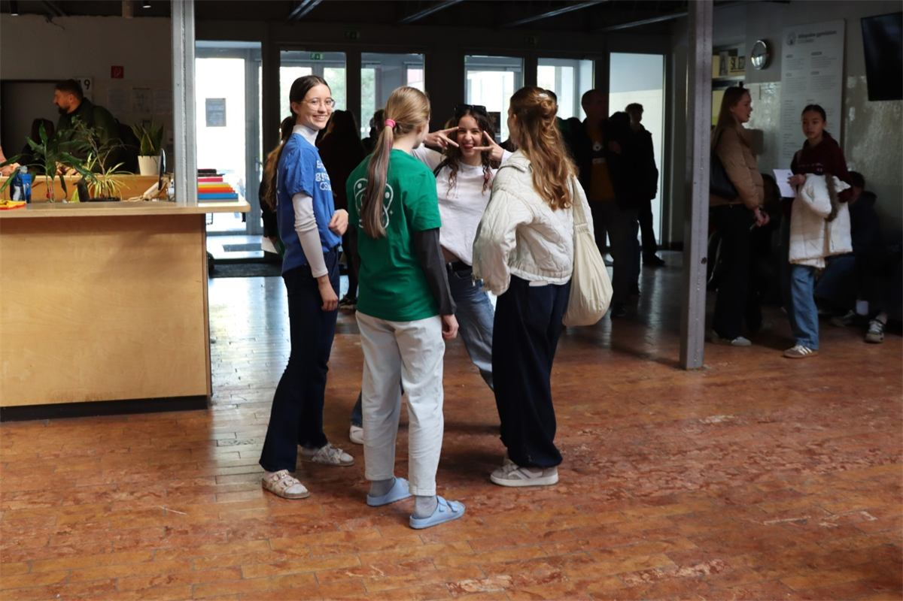
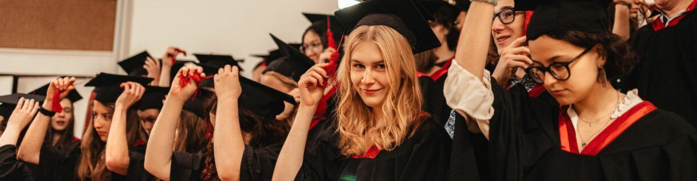

The Eagle & Child
A social enterprise students opened on 5 September 2016. Furnished with upcycled old chalkboards, serving homemade cakes, fruit and lemonade at break. Part of the proceeds goes to the scholarship fund.
Bilgym is a five-year Slovak-English high school in Petržalka, Bratislava. Here knowledge leads to thinking, English opens up new worlds, and small classes mean people who know who you are.

We educate and raise students towards creative and critical thinking, responsibility for themselves, others and the world, and the ability to build communities – within Christian biblical values.
Values matter as much as knowledge and skills. Knowledge without values can be dangerous – so we also teach how to live.
People who know each other, talk openly and enjoy working together. No one is an island – we'd rather build bridges than walls.
Diversity is a value here. The building is barrier-free, and scholarships open the door to those who face obstacles in life.
Since 2012, every student has had space to reflect on their decisions with a mentor who doesn't decide for them.


The five-year programme starts with a year of intensive language preparation. After that, subjects are taught in English too – with the aim of passing the maturita and earning language certificates recognised in the European Union and the USA.
Slovak language, Religion and Ethics, and PE stay in Slovak. The second foreign language is German or Spanish.
Extra language support is available for those who need it. The year ends with the Summer Semester Test.
Intensive English, a second foreign language and building a class community. Optional peer mentoring with older students.
More and more subjects in English. Mentoring is compulsory – you meet the mentor you choose twice a month.
Mentoring by agreement, on topics you set. Religion and Ethics moves from identity to values.
All students take the Slovak language maturita exam in year four.
Final maturita exams and university applications at home and abroad – with help from the school and alumni.

Mentoring is one-to-one guidance that gives students a safe space to reflect on their decisions and discover their potential. Problems are treated as chances to grow. The decision is always the student's.
Teacher-mentors complete a series of training sessions and receive regular supervision.
Mentoring is coordinated by Terézia Jančovičová (year two) and Zuzana Kotvanová (year three and up).
More about mentoringClubs are run by teachers, students and friends of the school, so the line-up changes every year. They start with people who want to share something with others.

A social enterprise students opened on 5 September 2016. Furnished with upcycled old chalkboards, serving homemade cakes, fruit and lemonade at break. Part of the proceeds goes to the scholarship fund.

Regular meetings with guests whose stories – ordinary and extraordinary – inspire. Anyone can ask questions, students and teachers alike.


We support students who want to experience a different school environment – for a semester or a whole school year at a partner school. And the world comes to us too: teachers from abroad and exchange students through Rotary Club. Study abroad is coordinated by Blanka Štefan Antalová.



A private Christian school in Minneapolis, Minnesota (USA) that welcomes students from all over the world.
A long-standing partner university. Together we're exploring whether student teachers from Montana could do their teaching practice with us.
European projects and mobility for students and teachers.
Our logo draws on Lewis's Space Trilogy. Its hero, Ransom, is a philologist – and his knowledge of languages is what lets him understand new worlds, cultures and beings. His journey is more than an intellectual adventure; it changes him. He discovers values beyond individualism and finds his place in a greater story.
That is what Bilgym is about: critical and creative thinking, the pursuit of truth, linking knowledge with responsibility, and the importance of community and service.
The first school opened in 1994. The network includes Narnia primary schools in Bratislava, Čierna Voda, Trnava and Levice, the C. S. Lewis Lyceum and our high school. The schools are run by the Association of C. S. Lewis Schools, founded by the Brethren Church congregation in Bratislava.

Always 9:00 – 12:00 at Haanova 28. You need to register in advance for every date – registration opens a few weeks before.

Tuition includes foreign-language textbooks. It's paid in two instalments, and an individual payment plan can be arranged where justified.
Payment details and fee history| Enrolment fee one-off, for new students | €700 |
|---|---|
| Tuition – first child per year | €3,870 |
| Tuition – second and further child per year, siblings studying at the same time | €3,230 |
Scholarships make study possible for students whose family or life situation puts obstacles in their way, but whose ambitions and values match Bilgym's mission.
Didn't find your answer? E-mail us at tajomnik@bilgym.sk.
No. Our students come from a range of Christian traditions, and some belong to no church at all. We do ask for respect for the school's Christian character. Religion and Ethics lessons are ecumenical and cover relationships, identity, the Bible and ethical questions.
Yes. Several of our students are not Slovak, and some come for a semester or a year through Rotary Club exchanges. Keep in mind that not all subjects are taught in English and the entrance exam includes Slovak, so Slovak language skills matter. Contact the school office to talk through your situation.
The English entrance exam is at A2 level. Year one focuses on intensive language preparation (13 hours a week), with extra support for those who need it.
Yes. 8th and 9th graders have the same admission conditions – neither group has an advantage. Testovanie 9 results are not taken into account.
It depends on the year. Slovak language, Religion and Ethics, and PE are always taught in Slovak. Textbooks are British, but the English maturita checks that students can recognise different varieties of English and use them consistently.
German or Spanish, based on your first preference. If group sizes need balancing, we may place a student according to their second preference. Language groups are set by level.
No – there's no dress code or uniform.
The school has a buffet, a café, microwaves and a canteen with a daily menu, including gluten-free and vegetarian options. We work with a dormitory on Vranovská Street in Petržalka, where a renovated floor is reserved for Bilgym students.

We send our graduates out into the world – to further study, work or family life – and love staying in touch. Through Alumni College Mentoring they help current students with their university applications.
By car: enter Haanova 26 into your satnav – Haanova 28 tends to send you behind the building. You can leave your bike inside the building.